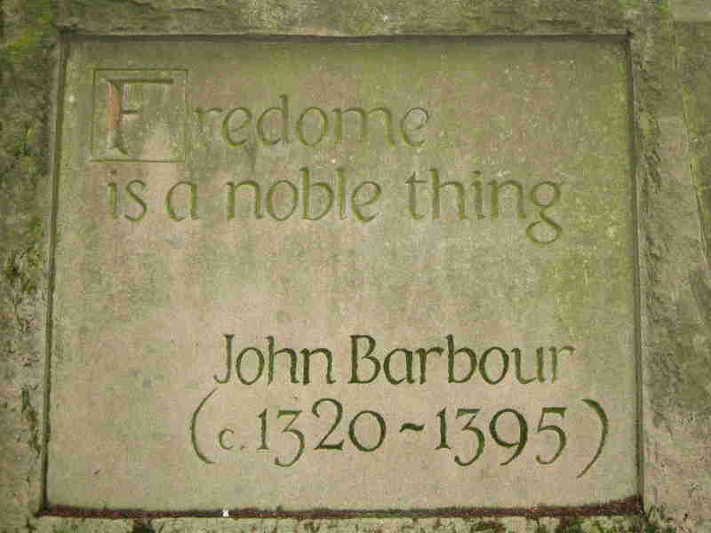

Inscription found on a wall in Edinburgh.
Much of man's existence until the late 20th century involved an economy focused primarily on the manipulation of scarce, unmalleable atoms. Copyright law was created to protect writers from the publishers. In a digital world, we can all be creators and publishers, so we need to revisit many fundamental questions, from the means we use to protect ideas, to the ways in which we purchase them.
This and the next chapter discusses details of free software, copyright and patent laws, but let's start by remembering that a shift towards a presumption of free digital information is actually a moral question. The Internet makes transmitting knowledge essentially free, so as free software evangelist Eben Moglen asks: “If you could feed the world for free, would you? Likewise, if you could provide every child access to a library of human knowledge they would never outgrow, would you?” It is the Internet that makes this question possible to ask, and necessary to answer.
Without the right software to decode and manipulate it, a digital idea is just a blob of bits to your computer. With the Internet, we can exchange bits, but with free software, we can exchange ideas. While free knowledge and free software are not any direct goal of the free market, they provide tremendous benefits to a free market because they allow anyone to create further value. If the larger goal is to encourage as many programmers as possible to write software, then the free software approach has already demonstrated its superiority, even though it is only on 1% of desktops. In fact, the proprietary PC world was always destined to have just one company dominate; a clone of Bill Gates who came along later would have been unable to learn from and improve upon the innovations of the first.
Free software brings the libertarian benefit of allowing information to be used in unlimited new ways, combined with the communitarian benefit of ensuring that no one is left behind by the access cost of knowledge. Because “free software” is better for the free market than proprietary software, and an important element of a society characterized by the free exchange of ideas, I think it is a better name than “open source”, although both represent the same basic idea. (Another reason to call it “free software” is that there is an academic tradition that the person who discovers or defines something has the right to give it a name, and Richard Stallman defined “free software” long before others called it “open source”.)